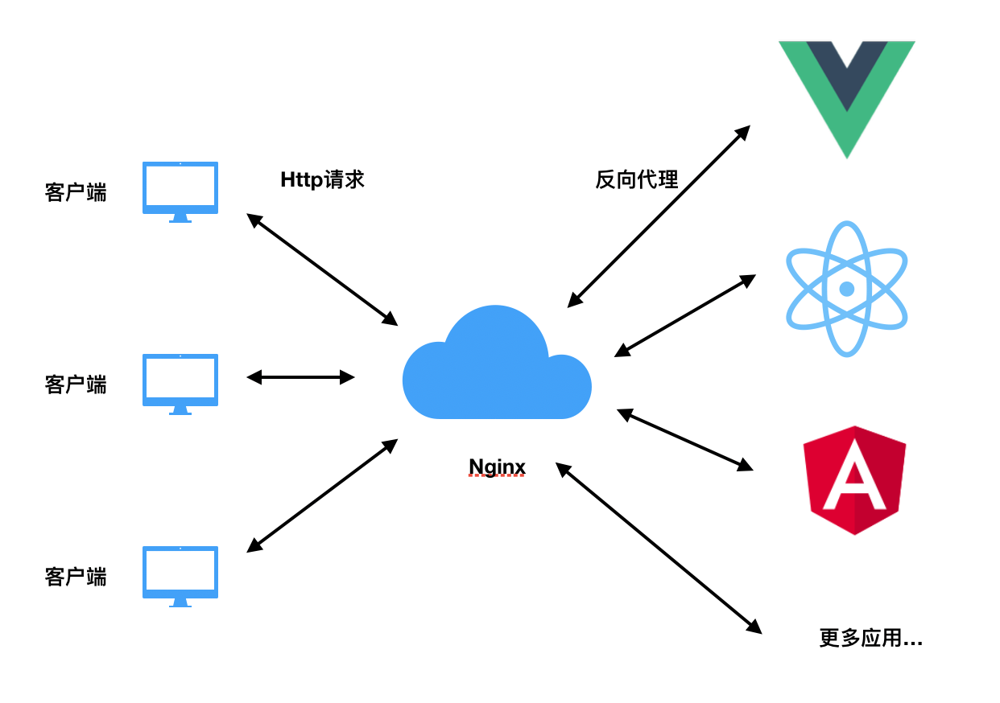

Nginx的反向代理对于大多数前端开发工程师再熟悉不过了，通过代理服务器的方式接收外部http请求，然后转发给内部的服务器。要进行反向代理需要预先知道服务端想要暴露的服务以及端口，然后在Nginx配置文件中添加对应的配置信息。但是如果后端的服务不是固定的，可以动态添加的，也就是说nginx要根据请求uri不同，将请求转发到不同的服务，但是又不想每次都去修改配置文件该如何去处理呢？
使用场景
有人会好奇会需要这种非主流的用法，在我们的业务场景里面前端是一个统一的应用入口应用，需要在这个应用里面进入其他的应用。应用都是在客户的终端里面，每次添加新的应用很难改变里面的nginx配置。所以需要一个固定的配置，可以根据请求的Uri不同自动访问不同的应用服务。

容器间的通信
环境中所有的服务都是通过docker容器的方式进行运行，容器之间有三种互访的方式
- 虚拟ip访问
docker会默认创建一个内部的桥接网络docker0，每创建一个容器分配一个虚拟网卡，容器之间可以根据ip互相访问 - link参数
容器运行的时候可以指定link参数 实现容器互访 - 创建bridge网络
可以通过1
docker network create xxx
创建一个网络，然后在启动容器的时候指定到这个容器就能实现容器互访
这里采用的是bridge的方式，bridge网络的容器之间可以通过容器名进行访问，所以nginx配置文件中可以将对应的请求通过容器名的方式反向代理到指定应用。
配置方法
Nginx在配置反向代理的时候可以通过正则表达式的方式进行匹配客户端请求，然后我们只需要在配置项中解析出正则表达式的内容，代理到指定的服务即可1
2
3
4
5
6
7
8
9location ~ /module/([a-zA-Z-_0-9]+)/(.*){
resolver 127.0.0.11 ipv6=off;
proxy_pass $scheme://$1:3000/$2$is_args$query_string;
proxy_set_header Host $http_host;
proxy_set_header Content-Type $http_content_type;
proxy_set_header X-Real-IP $remote_addr;
proxy_set_header X-Forwarded-For $proxy_add_x_forwarded_for;
proxy_set_header X-Forwarded-Proto $scheme;
}
这个配置文件体现的内容是将/module/xxx/index.html反向代理到xxx容器对应的服务，配置中$1和$2分别对应正则匹配中的([a-zA-Z-_0-9]+)和(.*)。
这个配置里面有两个比较”坑爹”的地方
- 反向代理的地址 需要通过Nginx内置预定义变量的方式补充url中请求的参数，否则服务端将无法通过？的方式获取参数。
- 配置中需要添加resolver 127.0.0.11 ipv6=off;禁止Nginx通过IPv6 (AAAA record) 的方式解析DNS，否则由于docker网络是ipv4的网络类型，Nginx无法解析对应的服务名。
反向代理优点
最后总结下使用Nginx反向代理的好处吧
- 使用Nginx反向代理可以解决前端跨域问题
Nginx反向代理使浏览器对于后端的服务地址“看起来”和前端处于相同的域下，不会产生跨域。 - 隐藏服务端信息，安全性高
使用反向代理服务器不需要每个服务的端口都对外部暴露，只需要暴露22端口即可，同时统一的配置可以隐藏服务端细节，降低服务器被攻击的概率。 - 负载均衡
以反向代理为基础的负载均衡可以合理分配流量，降低单点服务器的压力。